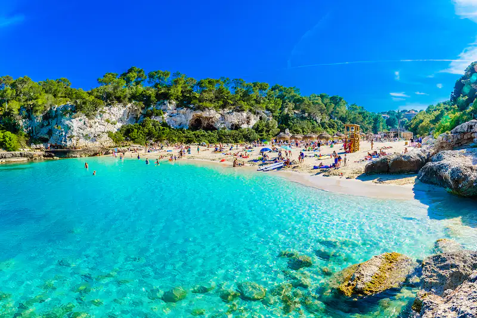
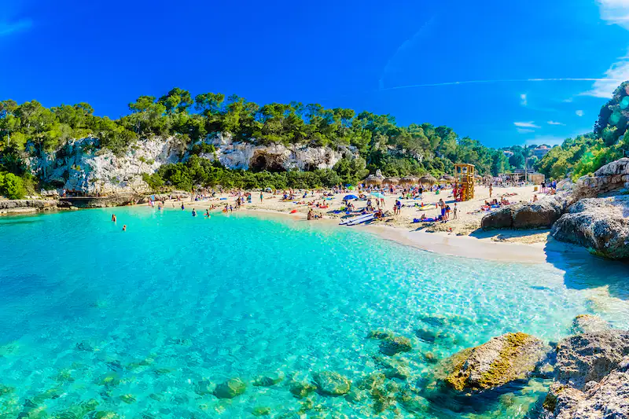

Galicia...
Perderse en la Ribeira Sacra o en O Ribeiro y conocer una parte de su patrimonio religioso, que es inmenso; recorrer algunas de las mayores concentraciones de hórreos de Galicia; dar un salto en el tiempo y visitar castros o dólmenes tan impresionantes como Santa Trega o Dombate…


Canarias...
Uno de sus principales atractivos son sus playas, perfectas para descansar tomando el sol o practicando deportes náuticos como el windsurf y el submarinismo. En el interior, encontrarás paisajes sorprendentes que animan a hacer senderismo, cicloturismo, escalada o, incluso, espeleología.
 

Mallorca...
El relieve mallorquín está formado por la sierra de Tramontana, con las montañas más altas, la sierra de Levante, con alturas más modestas, y otros montes menores. La sierra de Tramontana, al noroeste, forma acantilados y calas rocosas que contrastan con las playas de arena del resto del litoral.